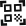

Destacado
¿Lista para tu próxima aventura?
MISIONES COMPLETADAS (0/0)

¡Buscá los QR y escanealos para completar misiones!
¿Lista para tu próxima aventura?
MISIONES COMPLETADAS (0/0)

¡Buscá los QR y escanealos para completar misiones!